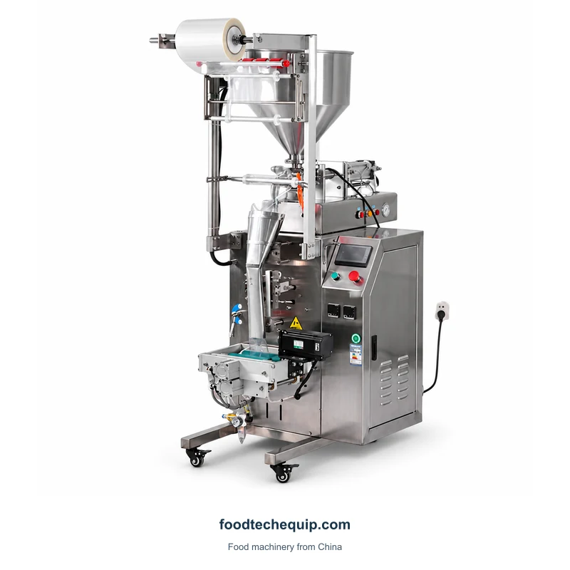
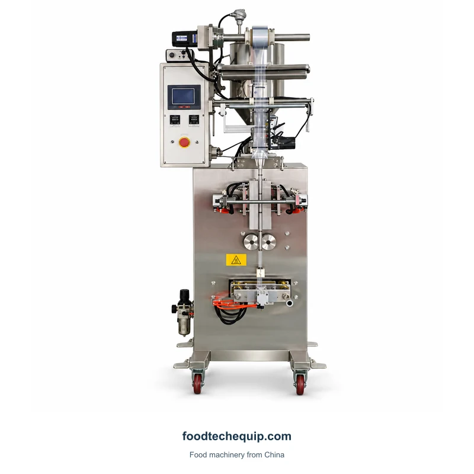

التعبئة في أكياس صغيرة
آلة تعبئة الحبيبات في أكياس صغيرة
آلة رأسية لتعبئة الحبيبات في أكياس صغيرة، مزودة بقادوس ونظام لتغذية الفيلم. السرعة المذكورة 10–23 عبوة/دقيقة.
عرض المعداتابدأ بالمادة وشكل الكيس النهائي. حدّد كمية التعبئة والطول والعرض وتركيب الغشاء وتصميم خط اللحام. وقد يتطلب الكيس الخاص الشكل رسمًا يبيّن حد اللحام وخط القص.
آلة رأسية لتعبئة الحبيبات في أكياس صغيرة، مزودة بقادوس ونظام لتغذية الفيلم. السرعة المذكورة 10–23 عبوة/دقيقة.
عرض المعدات
آلة تُغذّى بلفافة فيلم لإنتاج أكياس صغيرة محددة الشكل للسوائل أو الصلصات. السرعة المذكورة للتجهيز 200 هي 35–100 كيس/دقيقة.
عرض المعدات
معدات تعبئة الحبيبات مع مجموعة علوية متعددة الأقسام ومعالجة متكاملة للأفلام.
عرض المعدات
آلة تعبئة السوائل في أكياس صغيرة، مزودة بقادوس تغذية مخروطي وقسم تعبئة سفلي مغلق.
عرض المعدات
معدات تعبئة الحبيبات العمودية مع قادوس التغذية، وإطار مناولة الفيلم وأجزاء العمل المغلقة.
عرض المعدات
معدات تعبئة الصلصة العمودية مع معالجة الفيلم العلوي وأنبوب التشكيل.
عرض المعدات
معدات أكياس الصلصة العمودية المزودة بقادوس مخروطي، ولفافة فيلم وخزانة تحكم.
عرض المعدات
معدات أكياس السوائل العمودية مع قسم التشكيل ووصلات التغذية وأدوات التحكم.
عرض المعدات
آلة رأسية لتعبئة المسحوق في أكياس صغيرة، مع قسم خاص بغشاء التغليف ووحدة تشكيل وعناصر تحكم.
عرض المعدات
آلة رأسية لتعبئة السوائل في أكياس صغيرة من غشاء PET مركّب.
عرض المعدات
معدات تعبئة أكياس الصلصة العمودية مع قادوس تغذية علوي ومجموعة معالجة الأفلام.
عرض المعدات
آلة تعبئة الأكياس الصغيرة بجرعات من أكواب قياس حجمية، مع خيارات لأكواب كبيرة أو صغيرة أو متأرجحة.
عرض المعدات
معدات تعبئة أكياس الصلصة التي تجمع بين تغذية القادوس ومعالجة الأفلام والتحكم فيها.
عرض المعدات
آلة تعبئة الحبيبات بجرعات من أكواب قياس حجمية، مع تغذية علوية وتمرير رأسي لغشاء التغليف.
عرض المعدات
آلة رأسية لتعبئة الحبيبات في أكياس صغيرة، مع تغذية علوية ونظام لتمرير غشاء التغليف وعناصر تحكم أمامية.
عرض المعدات
آلة تعبئة المسحوق في أكياس صغيرة، مع قادوس وقسم رأسي لتمرير غشاء التغليف وعناصر تحكم.
عرض المعدات
آلة تعبئة الأكياس الصغيرة بجرعات من أكواب قياس حجمية، مع قادوس وحامل لبكرة الغشاء وقسم تعبئة رأسي.
عرض المعداتجرّب كلمة رئيسية مختلفة أو امسح عوامل التصفية.
يتطلب المسحوق والحبيبات والسوائل والصلصات ترتيبات تغذية مختلفة. قم بمشاركة عينة المادة والجزء المستهدف وتخطيط الختم لتحديد الكيس النهائي.
قارن معدلات التعبئة وأبعاد الفيلم للتكوين المحدد. قم بتمييز عرض اللفة وعرض الكيس النهائي وطول الكيس في الرسم الخاص بك.
| منطقة التحديد | ماذا تقارن | ما الذي ينبغي تقديمه |
|---|---|---|
| تغذية المواد | مسحوق أو حبيبات أو حالة سائلة | عينة المادة والجزء المستهدف |
| تشكيل الحزمة | أبعاد اللفة مقابل أبعاد الكيس النهائي | مواصفات الفيلم ورسم العبوة النهائية |
| التفريغ | كيفية جمع كل عبوة مملوءة | التعامل مع المصب والمساحة المتوفرة |
تتضمن مهمة الكيس حزمة الاستلام بالإضافة إلى تحضير الأجزاء. إذا كنت تحتاج فقط إلى جرعة مقاسة لخطوة تعبئة موجودة، فقارن الجرعات بشكل منفصل. قم بوصف الحزمة النهائية والعمليات التي يجب أن يتضمنها عرض الأسعار.